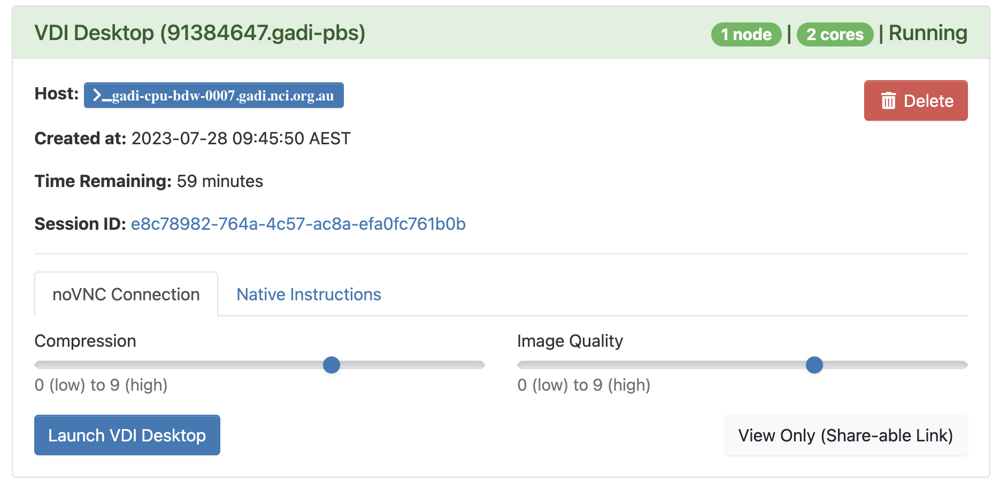

Result Visualization of ILAMB#
Result visualization is an important part of ilamb, it provide a lot of visulaized graphs to allow users to evaluate the performance of each models in various aspect. The result is shown in a html page, which is not possible to visualize it in CLI. So we gonna teach user how to use NCI-ARE to explore the ilamb result.
What is ARE#
ARE is a web-based graphical interface for performing your computational research. It combines the familiarity of your regular desktop/laptop with the power of NCI’s world-class research HPC capabilities. ARE gives you access to NCI’s Gadi supercomputer and data collections, all from a simple, graphical interface. ARE consists of a number of applications that support your research such as Virtual Desktop, JupyterLab, Terminal, etc.
In this tutorial, we mainly provide guidance for use ARE for ilamb result, for user who want more imformation about ARE, you can find it here.
Acess to ARE#
ARE can be accessed at are.nci.org.au. NCI users can use NCI username and password to login. If you are a new user of NCI, please apply an account at here
Virsual Desktop#
When you log into ARE, click Virsual Desktop Instance(VDI), and you will see the setup page, it will setup the VDI just like you setup your PBS job on NCI CLI, so just follow the instruction on the page. Only one thing need to ensure is make sure your group which contain the ilamb result is in the storage, otherwise you cannot access the directory in your VDI. For more imformation about PBS job, here is the link to PBS directive

Launch VDI#
When you get everything setup and click Launch button you’ll be redirected to this page:

Maybe you will be in queue for a while, it depends on what kind of queue and how much source you apply, when the status at the top right turn to running, you can click Launch VDI Desktop to access your VDI.
Host ilamb result#
This is the Desktop of your VDI:

It’s just like a Linux OS so for user who not familiar whth VDI, just treat it as a Linux.
Then cd to the ilamb result directory(default is _build directory), and use commmand below to host a localserver, and access localhost in your browser to see the result.
python3 -m http.server
localhost address:
http://0.0.0.0:8000/
Clean the Cache#
After you finish the use of locahost use ctrl+C to stop the local server. and one more thing you need to do is clean the browser cache, otherwise next time you build a new localhost of another ilamb result, you will see the same result as the previous one.
Actually it’s not conplicate, just one line command for ARE user:
rm -r /jobfs/$PBS_JOBID/.cache/mozilla/firefox/*.default-default/*